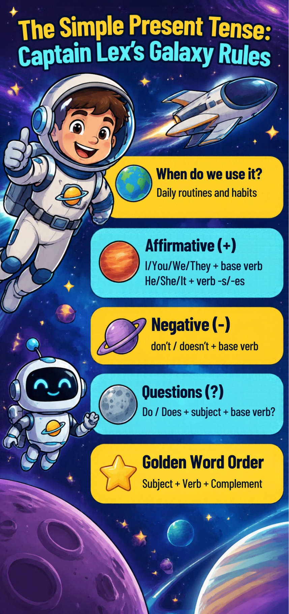
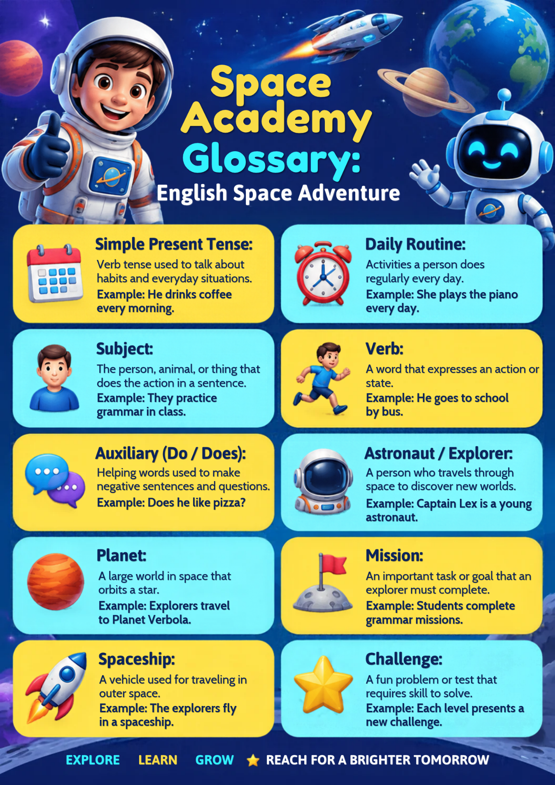
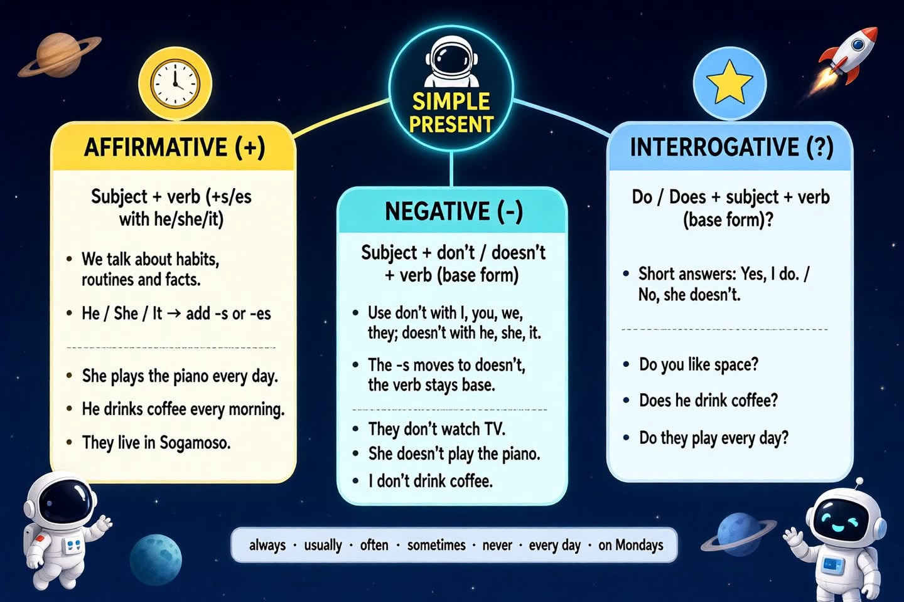

Build sentences
Recognize and use affirmative, negative, and question forms of the Simple Present Tense with all personal pronouns.
Master the Simple Present Tense Across the Galaxy
Hello, Space Explorers! Join Captain Lex and his loyal robot, Verbix-3000. Travel across five planets, solve puzzles, and restore the correct use of the Simple Present Tense!
By completing this digital adventure, you will be able to:
Recognize and use affirmative, negative, and question forms of the Simple Present Tense with all personal pronouns.
Learn action verbs and everyday vocabulary to describe daily routines and situations.
Develop problem-solving, critical-thinking, and independent-learning skills through space challenges.
Study with the original images from the Space Academy learning guide.



She plays the piano.
He doesn't watch TV.
Do you like space?
Play three mini-games built right into the website. Each correct answer earns stars!
Read “Space Adventure: The Blue Planet”. Complete the Vocabulary Match and five Reading Check questions.
Open reading activity ↗Activate Voice Mode and practice five questions about your daily routine with an AI tutor.
Hi! I am a 6th-grade student learning the Simple Present Tense. Ask me 5 simple questions about my daily routine and help me correct my pronunciation.
Complete the mission, celebrate your progress, and share what you learned!
Complete the challenges to earn your explorer status.
🌱 Rookie Explorer
Continue the gamified adventure created with Genially.
Launch Genially ↗Visit Padlet and reflect on your Space Academy learning journey.
Open Padlet ↗Every resource listed in the original learning guide, ready for your mission.
External activities open in a new tab. Some services may require an account or have their own accessibility and privacy settings.